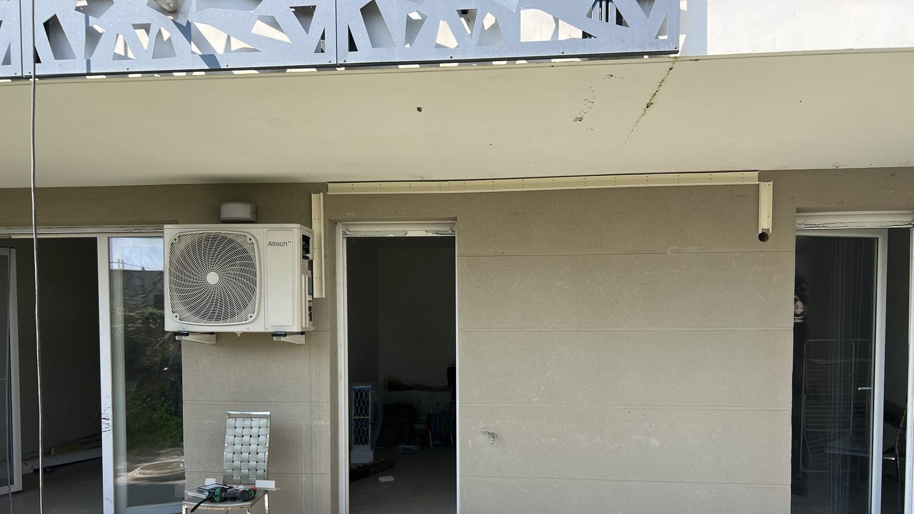

Vous parlez à celui qui pose
Pas de commercial, pas d'équipe envoyée au hasard. Celui qui fait le devis est celui qui perce le mur.
Accueil / Installation
Chaud l'hiver, froid l'été. Le prix posé est sur la page, et c'est moi qui viens poser.
Offre de lancement 1er entretien offert (159 € par unité intérieure) pour tout devis de pose signé avant le 15 novembre 2026.
Prix posé, matériel et main-d'œuvre compris, pour une installation standard.
Monosplit 2,5 kW, gamme essentielle
dès 1 290 € posé
+ 1er entretien offert par unité intérieure, devis signé avant le 15 novembre
Prix TTC, pose standard comprise. Déplacement gratuit dans un rayon d'environ 15 à 20 km autour de Salon ; au-delà, un léger forfait peut s'ajouter, toujours indiqué dans le devis.
Unité murale + groupe extérieur, mise en service comprise.
Les marques que j'installe et que j'entretiens
Prix « à partir de » pour une pose standard. Un supplément éventuel est chiffré dans le devis, avant tout engagement.
| Installation | EssentielleAtlantic, Thermor, Altech… | PremiumMitsubishi Electric, Daikin |
|---|---|---|
| Monosplit 2,5 kWChambre, bureau, jusqu'à ~25 m² | 1 290 € | 1 590 € |
| Monosplit 3,5 kWSéjour, jusqu'à ~35 m² | 1 450 € | 1 790 € |
| Monosplit 5 kWGrand séjour, jusqu'à ~50 m² | 2 050 € | 2 490 € |
| Bisplit 2 piècesUn groupe extérieur, deux unités intérieures | 2 390 € | 3 090 € |
| Trisplit et plus, console, gainableSelon la configuration du logement | Sur devis, sous 24h | |
Surfaces indicatives pour un logement correctement isolé. Pour un dernier étage ou une pièce très exposée, prenez la puissance au-dessus. Calculer ma puissance
Offre de lancement : pour tout devis de pose signé avant le 15 novembre 2026, le premier entretien est offert pour chaque unité intérieure (valeur 159 € par unité). Il est réalisé dans les 12 mois qui suivent la pose et ne peut pas être échangé contre une remise.
Chaque supplément est vu sur place et écrit dans le devis. Pas de surprise sur la facture.
Ou vous remplissez le devis en ligne. Je vous rappelle dans la journée.
Je passe voir le logement et vous envoie un devis détaillé sous 24h.
Une journée pour un monosplit en général. Chantier propre, gravats emportés.
Tests, réglages, et je vous montre comment bien utiliser votre clim.

Pas de commercial, pas d'équipe envoyée au hasard. Celui qui fait le devis est celui qui perce le mur.
Le prix affiché est le point de départ d'une pose standard. Je vous le confirme après une visite ou quelques photos, et tout supplément est écrit dans le devis avant de commencer.
Une question, un réglage, une panne : vous avez mon numéro direct. L'entretien annuel est aussi possible.
La pose est garantie 2 ans. Si vous souscrivez ensuite le contrat d'entretien annuel, la garantie de pose est prolongée. Le matériel bénéficie en plus de la garantie du fabricant.
Oui. Le prix comprend le matériel, la pose standard et la mise en service. Si votre logement demande un supplément (support sur toiture, pompe de relevage, ligne électrique), il est chiffré dans le devis avant tout engagement.
Le devis part sous 24h après la visite. La pose se cale ensuite selon le planning et la disponibilité du matériel ; vous avez une date ferme dans le devis.
Oui. Une climatisation réversible chauffe en pompe à chaleur air-air et consomme bien moins qu'un radiateur électrique pour la même chaleur. Dans notre climat, c'est souvent le chauffage principal des pièces de vie.
La gamme essentielle convient très bien à un usage courant. Mitsubishi Electric et Daikin sont plus silencieux, plus économes et tiennent mieux dans le temps : c'est le bon choix si la clim tourne beaucoup ou dans une chambre.
Les climatisations air-air ne sont en général pas éligibles à MaPrimeRénov'. C'est pour ça que j'affiche un prix réel plutôt qu'un prix « après aides ».
En copropriété, il faut généralement l'accord du syndic. En maison, une déclaration préalable peut être demandée selon la commune et l'emplacement. Je vous indique quoi vérifier lors de la visite.
Appelez directement, c'est le plus rapide. Sinon, le devis en ligne prend deux minutes.